So bekommt dein Tag Struktur
Vier Schritte, jeden Tag dieselben. Nach einer Woche denkst du nicht mehr darüber nach.
Aufschreiben
Am Abend oder am Morgen: zehn Zettel aufs Brett, große und kleine. Tippen oder einsprechen.
Festmachen
Wähle dein Top-Thema und halte den Knopf gedrückt. Ab jetzt steht der Plan.
Abhaken
Jeder erledigte Zettel bekommt seinen Stempel. Kommt Neues dazu, läuft es als Extra.
Abschließen
Am Abend entscheidest du: mit auf morgen, später oder kann weg.
Zwei Arten von vollen Tagen
Dieselbe Grenze hilft beiden: zehn Dinge, fest vorgenommen. Mehr nicht.
Deine Liste wird nie kürzer
Du arbeitest viel ab, und abends stehen trotzdem 30 Punkte offen. Hier darf alles auf den Parkplatz, aufs Brett kommen nur zehn. Sind sie geschafft, ist Feierabend – mit gutem Gefühl.
Du willst deinen Tag im Griff haben
Termine, Aufgaben, Gewohnheiten – alles an einem Ort, nach Uhrzeit geordnet. Du legst morgens fest, was zählt, kleine Zettel zählen wie große, und Großes teilst du in klare Schritte.
Alles, was ein Tag braucht – auf zehn Zetteln
Aufgaben, Gewohnheiten, Fokus und Termine liegen auf einem Brett. Was nicht gebraucht wird, bleibt aus dem Weg.
Einfach einsprechen
Tipp aufs Mikrofon und sag, was ansteht. „Friseur am 3.11. um 13 Uhr“ wird ein Termin, „Bei Rewe Butter kaufen“ kommt auf die Einkaufsliste für Rewe und „Lena hat am 3. Mai Geburtstag“ wird ein Jahrestag. Auf Android auch ohne die App zu öffnen – mit dem Mikrofon-Widget auf dem Startbildschirm.
Genau zehn Plätze
Der elfte Gedanke muss warten. So planst du nur, was du an einem Tag wirklich schaffen kannst. Ein Zettel ist dein Top-Thema.
Ein Versprechen an dich
Du sagst fest zu, indem du den Knopf gedrückt hältst. Für jeden erledigten Zettel erhältst du einen Punkt.
Gewohnheiten-Tracker
Sport, Wasser trinken, kein Handy im Bett: Gewohnheiten erscheinen an ihren Tagen von selbst. Mit Strichliste und Serie.
Fokus-Timer
Handy umdrehen, die Fokus Zeit läuft. Auf Android ist „Nicht stören“ an, bis du es wieder hochnimmst. Auf dem iPhone zeigt der Sperrbildschirm die Restzeit.
Kalender und Termine
Termine aus deinem Kalender kommen als Zettel aufs Brett. Eigene Termine landen in deinem Kalender – bei Google oder Apple, auf Wunsch mit Gästen.
Geburtstage und Jahrestage
Sag einfach „Lena hat am 3. Mai Geburtstag“. Die App merkt es sich und erinnert dich ein paar Tage vorher.
Einkaufsliste, Notizen, Checklisten
Einkaufslisten, Notizen oder Checklisten auch per Sprache eingeben und an einen Zettel anhängen, ausdrucken oder per WhatsApp teilen.
Zeitleiste
Wenn Uhrzeiten dazukommen: Zettel mit dem Finger auf eine Uhrzeit ziehen, freie Zeit antippen und einplanen.
Große Brocken in Schritten
Ist dir etwas zu groß, teilst du es in drei bis fünf kleine Schritte. Der letzte Schritt ist der Gipfel.
Ein Parkplatz für alles andere
Alles darf auf die Liste – aufs Brett kommen nur zehn. Der Rest wartet auf dem Parkplatz. Sonntags erinnert Tack dich an das, was dort schon lange steht.
Widget für den Startbildschirm
Dein Tagesplan im Stil deines Bretts. Abhaken, ohne die App zu öffnen. Auf Android nimmt ein kleines Widget neue Aufgaben per Sprache auf.
Tag oder Woche als PDF – als Plan für den Kühlschrank oder den Schreibtisch.
Brett, Zeitleiste, Fortschritt
Mehrere Ansichten für denselben Tag. Die Beispieldaten sind ausgedacht.
Das Brett
Alle zehn Zettel auf einen Blick. Jede Art hat ihr eigenes Wort und Symbol, nicht nur eine Farbe.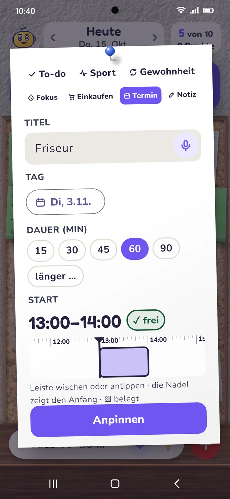
Neuer Zettel
Tippen oder einsprechen. Aus „Friseur am 3.11. um 13 Uhr“ wird gleich ein Termin mit Tag und Uhrzeit.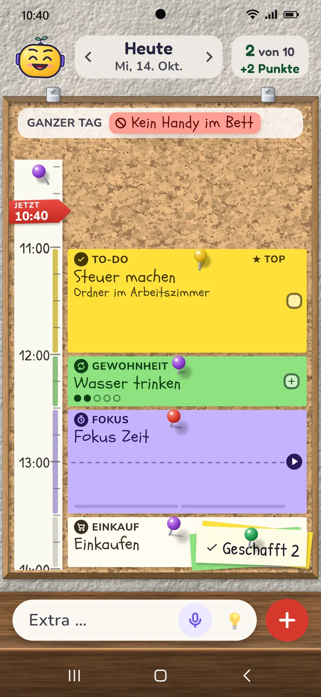
Die Zeitleiste
Dein Tagesplan nach Uhrzeit. Zettel per Finger verschieben, freie Zeit antippen und einplanen.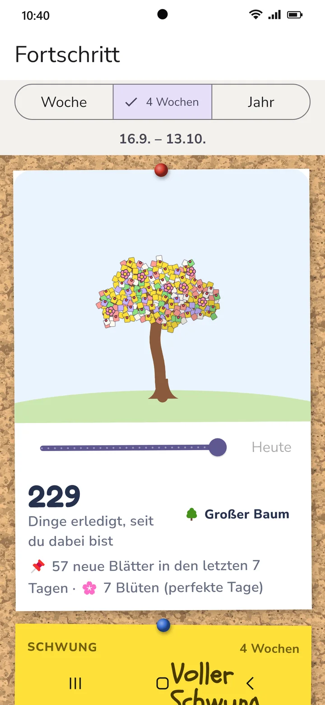
Der Fortschritt
Woche, 4 Wochen, Jahr: was du geschafft hast, wann es gut läuft, welche Gewohnheiten halten. Jedes erledigte Ding wird ein Blatt am Baum.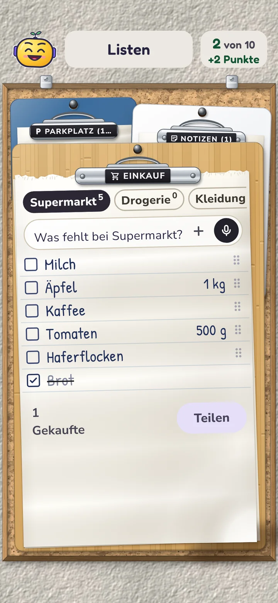
Die Listen
Einkaufsliste nach Läden, Parkplatz und Notizen. Einsprechen geht auch.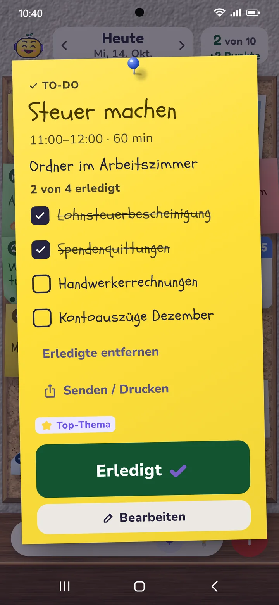
Checkliste am Zettel
Untertitel und Liste direkt an der Aufgabe. Abhaken, ergänzen, mitnehmen auf morgen.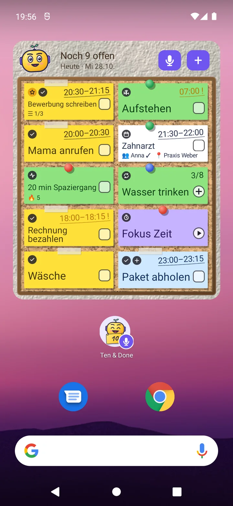
Das Widget
Dein Tagesplan auf dem Startbildschirm, im Stil deines Bretts. Abhaken, hochzählen, Fokus Zeit starten – ohne die App zu öffnen.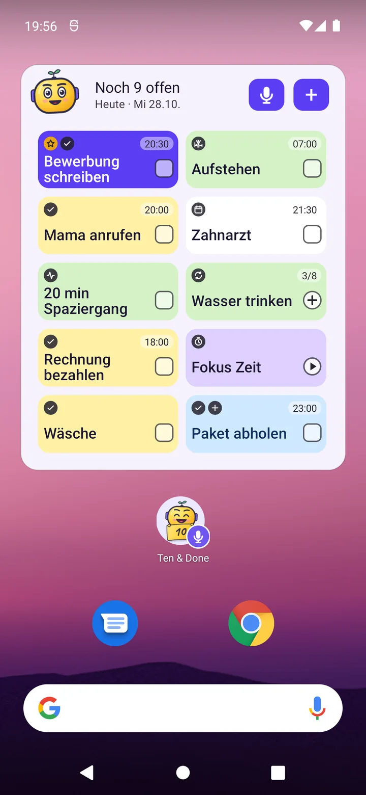
Widget in Bento
Das Widget folgt deinem Stil. Mikrofon und ＋ nehmen neue Aufgaben gleich vom Startbildschirm auf. Darunter das kleine Widget für Android: Tack mit Mikrofon – antippen und lossprechen.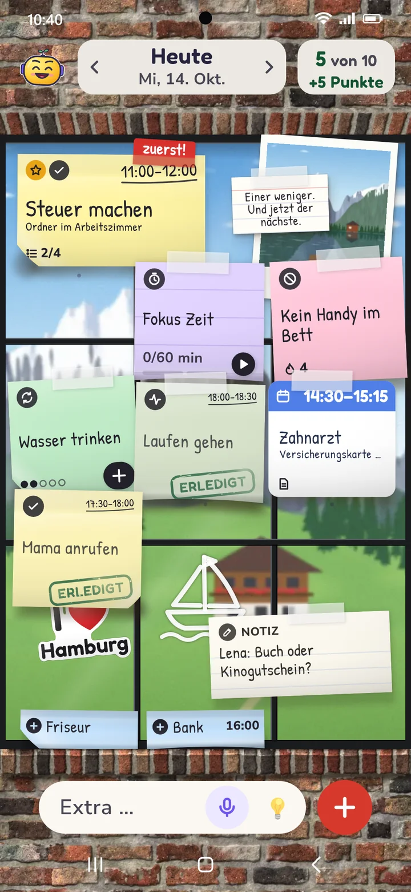
Das Fenster
Zettel auf der Scheibe, dahinter Meer, Berge, Stadt – oder dein eigenes Foto.Dein Brett, dein Stil
Korkwand, Whiteboard, Fenster mit oder ohne Rahmen, Bento, Glas & Glow, Editorial, Klar als ruhige Liste nach Uhrzeit oder Einfach mit großer Schrift. Dazu ein Spruch, ein Foto und kleine Accessoires. Hell und dunkel.
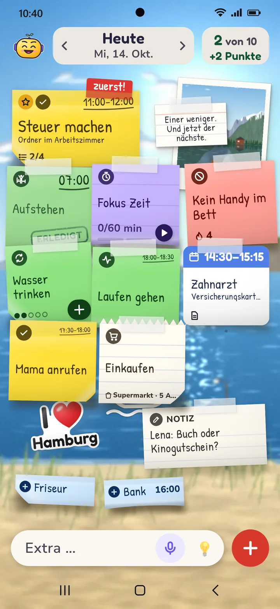
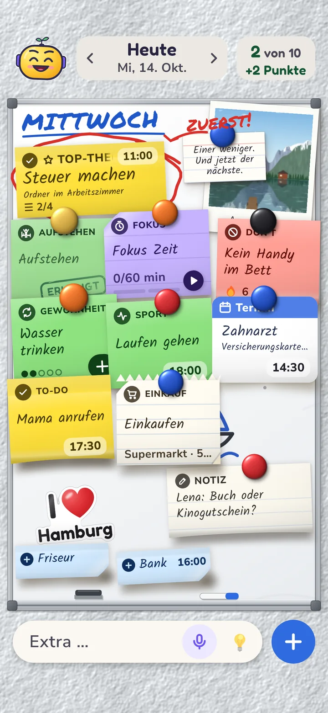
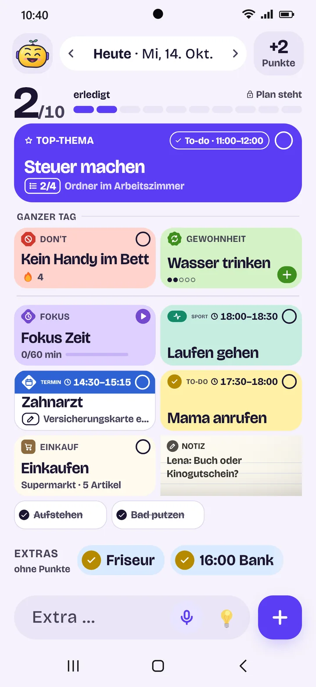
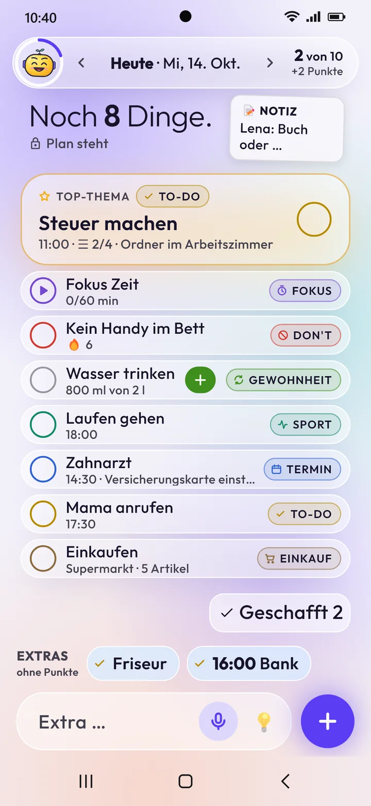
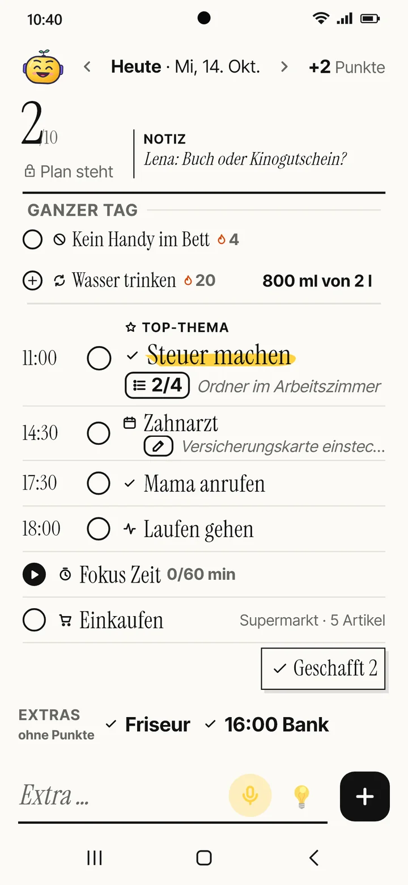
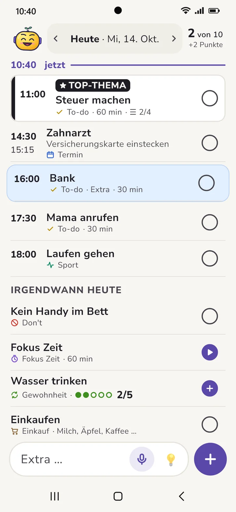
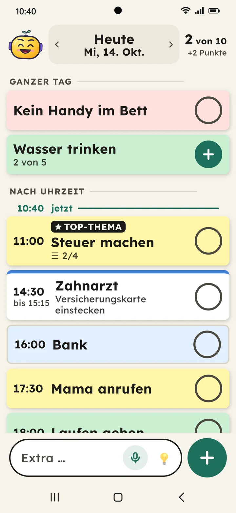
Auch auf dem Tablet zu Hause
Hochkant oder quer: Auf dem Tablet hat dein Brett viel Platz, Zeitleiste und Listen stehen nebeneinander, und der Fortschritt zeigt alles auf einen Blick.
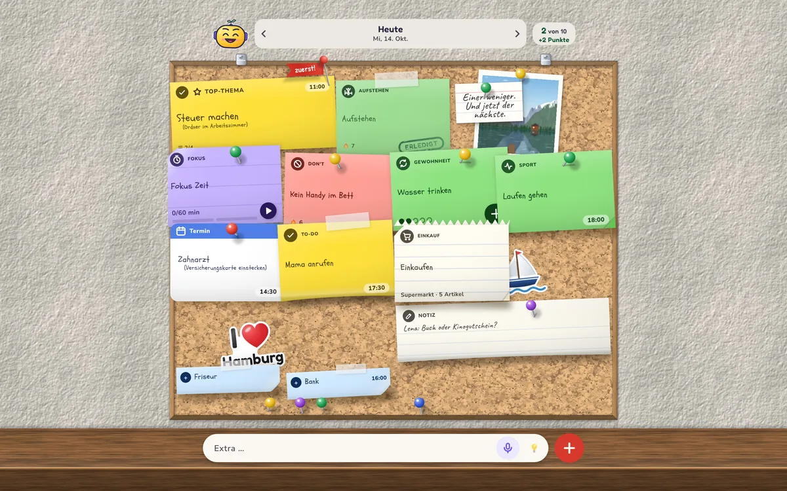

Einer weniger. Und jetzt der nächste.
Das ist Tack. Tack freut sich mit dir, schubst dich an und gibt jeden Tag einen kurzen Tipp, wie du deinen Tag gut organisierst. Mehr will Tack nicht. Wer es lieber schlicht mag, wählt ein anderes Aussehen.
Dein Plan gehört dir
Ten & Done braucht kein Internet zum Planen. Was du aufschreibst, bekommt niemand zu sehen.
- Kein KontoKeine Anmeldung, keine E-Mail-Adresse, kein Passwort.
- Kein ServerAlles liegt auf deinem Handy und funktioniert auch offline. Ist die Sicherung deines Handys an (Google oder iCloud), kommen die Daten verschlüsselt mit aufs neue Handy.
- Keine WerbungNichts blinkt, nichts wird dir verkauft.
- Keine AuswertungKeine Tracker und keine Nutzungsstatistik.
Frei – und Premium, wenn du mehr willst
Den Kern bekommst du ohne Kauf und ohne Zeitlimit. Premium gibt es als Jahresabo oder zum einmaligen Kauf, ohne Probezeit, die abläuft.
Frei
- 10 Aufgaben am Tag mit Top-Thema und Punkten
- Gewohnheiten, Fokus Zeit, Kalender
- Zeitleiste, Einkaufsliste, Parkplatz, Notizen
- Brett-Widget und Einsprechen
- Fortschritt der Woche
- Stile Kork und Klar
Premium
- Alle Stile, Farben und Schriften
- Fortschritt über 4 Wochen und das ganze Jahr
- Große Aufgaben in Schritten
- Gäste zu Terminen einladen
- Listen-Widget, Sparschwein, Urkunden
- Mehr Figuren und Accessoires für Tack
Endet ein Abo, bleibt alles, was du eingerichtet hast.
Gut zu wissen
Warum genau zehn?
Zehn Dinge passen auf einen Bildschirm und in einen Tag. Wer mehr plant, schafft meist weniger und ärgert sich abends über den Rest. Zu viel sind zehn nicht: Die Zettel dürfen so klein sein, wie es dir heute passt.
Und wenn mir keine zehn Dinge einfallen?
Dann nimm kleine. „Ein Glas Wasser trinken“ zählt genauso wie „Steuer machen“. Tipp auf 💡, dann schlägt Tack dir etwas vor: Dinge, die du schon mal geschafft hast, Einträge vom Parkplatz und kleine Ideen.
Was passiert, wenn ich etwas nicht schaffe?
Dann gibt es dafür keinen Punkt – sonst passiert nichts. Der Zettel wartet auf dem Parkplatz, und am nächsten Morgen fragt Tack, ob er wieder aufs Brett soll. Bleibt er öfter liegen, schlägt Tack vor, ihn in kleine Schritte zu teilen.
Ich bin krank oder im Urlaub. Und jetzt?
Trag die Tage ein. Dann gibt es keinen Plan und keine Erinnerungen. Deine Serie wartet, bis du wieder da bist.
Kann ich auch mehr als zehn Dinge erledigen?
Ja. Nach dem Festmachen kommt alles Neue als Extra dazu. Extras bringen keine Punkte, du siehst sie aber im Fortschritt.
Kostet Ten & Done etwas?
Der Kern ist frei: 10 Aufgaben am Tag, Gewohnheiten, Fokus Zeit, Kalender, Listen, Notizen, Widget und der Fortschritt der Woche. Premium gibt es als Jahresabo oder zum einmaligen Kauf.
Gibt es ein Widget?
Ja. Das Brett-Widget zeigt deinen Tagesplan auf dem Startbildschirm, im Stil deines Bretts. Dort kannst du auch abhaken. Auf Android-Handys nimmt ein kleines Widget neue Aufgaben per Sprache auf.
Sieht die App meinen Kalender?
Nur wenn du es einschaltest. Dann zeigt sie Termine aus dem Kalender deines Handys als Zettel. Legst du in der App einen Termin an, trägt sie ihn in deinen Kalender ein – bei Google oder Apple. Andere Termine ändert sie nicht.
Läuft die App auf dem Tablet?
Ja, hochkant und quer. Auf dem Tablet stehen Zeitleiste und Listen nebeneinander, der Fortschritt in Spalten.
Gibt es Ten & Done für Android und iPhone?
Ja. Ten & Done gibt es für Android-Handys und -Tablets und für iPhone und iPad.
Ein Problem oder eine Idee?
Schreib uns. Jede Nachricht wird gelesen.
Öffnet sich beim Klick kein Mail-Programm? Adresse kopieren und in deinem Postfach einfügen, z. B. bei Gmail, GMX oder Web.de.